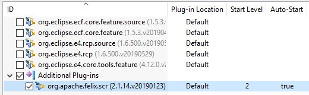
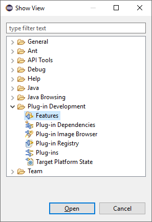
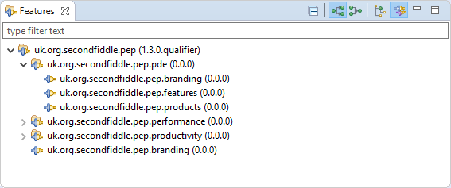
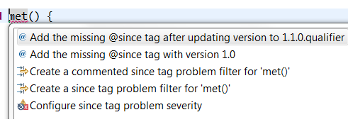

Here are descriptions of some of the more interesting or significant changes made to the Plug-in Development Environment (PDE) for the 4.13 release of Eclipse. They are grouped into:
Dialogs, Wizards and Views |
|
| Configure start levels for feature based launch |
Feature-based Launch Configuration now supports custom start levels and auto-start properties for individual plugins.
To configure them, you need to add the plugins via Add Plug-ins... first. When launching a feature-based product, defined start levels and selected features are automatically filled out in the created launch configuration. You can then select features selected below to convert it to feature-based without any further configuration.  |
| New Features view |
You can now view the structure of features in your workspace projects using the new Features view.
To open the view, go to the Show View dialog (Window > Show View > Other...) and choose it from the Plug-in Development category.  By default the view shows only features, with child features listed under their parents rather than at the top level. The buttons on the view's toolbar allow plugins/fragments included within a feature to be shown, child features to be shown at the top level, and for the hierarchy to be inverted (to show the features including each feature).  |
API Tools |
|
| Quickfix to add missing since tag after version update |
On any API addition that also results in a version change, a quickfix is now available that first
updates the version appropriately and then adds the @since tag based on the updated version.
 |
| Optimization in API tools builder |
There are various optimizations that are done for API analysis builder which has
improved the performance in some scenarios tremendously.
For example, changing Missing API baseline option in |
| Full build on API tools preferences change |
Manually changing the settings file .settings/org.eclipse.pde.api.tools.prefs of a project
will result in a full project build, if the workspace auto-build is on.
For the 4.13 release, it is possible to disable this new behavior with the VM property: -Dorg.eclipse.disableAutoBuildOnSettingsChange=true. It is planned to remove this VM property in a future release. |
PDE Compiler |
|
| Full build on PDE compiler preferences change |
Manually changing the settings file .settings/org.eclipse.pde.prefs of a project
will result in a full project build, if the workspace auto-build is on.
For the 4.13 release, it is possible to disable this new behavior with the VM property: -Dorg.eclipse.disableAutoBuildOnSettingsChange=true. It is planned to remove this VM property in a future release. |